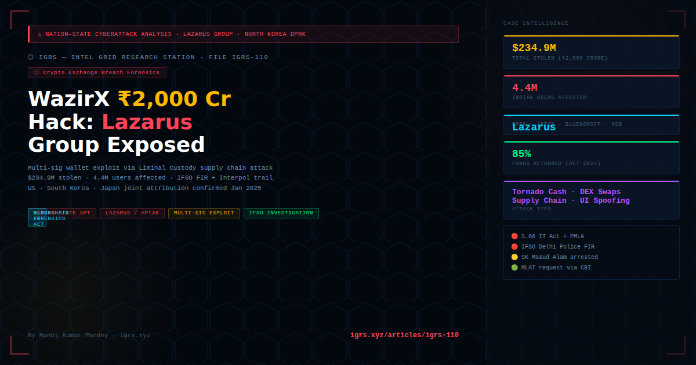

⚠ Disclaimer: This analysis is based entirely on publicly available sources — WazirX official disclosures, Mandiant forensic report, IFSO FIR records, Wikipedia, and joint US-South Korea-Japan government attribution. No confidential investigation data is referenced.
On 18 July 2024, at 06:19 UTC, India's largest cryptocurrency exchange WazirX lost approximately $234.9 million (₹2,000 crore) in a single coordinated cyberattack — the largest crypto heist in Indian history. The attack, later officially attributed to North Korea's Lazarus Group by the governments of the United States, South Korea, and Japan, exposed critical vulnerabilities in multi-signature wallet custody architecture and the dangers of supply chain attacks targeting third-party custodians.
This article is a complete technical breakdown of the attack — how it was executed, what the blockchain trail revealed, how Indian law enforcement responded, and what every crypto investigator and cyber cell officer must learn from it.
| Date / Time | Event |
|---|---|
| 10 Jul 2024 | Lazarus Group pre-positions malicious smart contracts on Ethereum — funded via Tornado Cash (anonymisation mixer). No interaction with WazirX wallet yet. |
| 18 Jul 06:19 UTC | Attack initiated. WazirX's Ethereum multisig wallet (0x27fD43BABfbe83a81d14665b1a6fB8030A60C9b4) begins draining. |
| 18 Jul 06:48 UTC | Crystal blockchain intelligence firm detects and blocklists destination address. Attack already complete — $234.9M gone. |
| 18 Jul (morning IST) | WazirX suspends all withdrawals. Cyvers Alerts (web3 security) had already flagged the exploit — WazirX took 4 hours to acknowledge. |
| 18 Jul (afternoon IST) | WazirX confirms preliminary loss exceeds $230 million. Blames Liminal Custody interface. |
| 5 Aug 2024 | FIR filed with Delhi Police IFSO (Intelligence Fusion and Strategic Operations) unit. |
| 14 Aug 2024 | Mandiant (Google) releases forensic report — concludes WazirX's laptops were NOT compromised. Liminal's interface was the attack surface. |
| Nov 2024 | Delhi Police arrests SK Masud Alam (West Bengal) for opening mule account 'Souvik Mondal' used to facilitate hack. |
| Jan 2025 | US, South Korea, Japan officially attribute attack to Lazarus Group in joint statement. |
| Oct 2025 | WazirX restarts operations after Singapore High Court approves restructuring — users receive 85% of funds. |
WazirX used a 4-of-6 multi-signature wallet — meaning any transaction required 4 signatures out of 6 keyholders (5 WazirX + 1 Liminal Custody). This architecture was supposed to be the strongest security layer. Instead, it became the attack surface.
Core exploit: Lazarus manipulated the transaction payload displayed on Liminal's interface — signatories saw a legitimate transaction on their screen but were actually approving a malicious smart contract upgrade that transferred wallet control to the attacker. Classic UI/UX spoofing on a custodial interface.
On July 10, Lazarus deployed malicious smart contracts on Ethereum, funded through Tornado Cash to obscure the funding trail. These contracts were dormant — no interaction with WazirX yet. This is standard Lazarus operational pattern: pre-position infrastructure days/weeks before the actual attack.
Lazarus created a fake WazirX account (via mule — SK Masud Alam's 'Souvik Mondal' account), deposited tokens, and purchased GALA tokens to map the exchange's hot wallet transaction flow. This reconnaissance phase allowed them to understand the signing process before targeting the cold wallet.
At the moment of attack, Lazarus sent a transaction request through Liminal's interface. The interface displayed a legitimate-looking transaction to WazirX signatories, but the actual on-chain payload contained a malicious contract upgrade instruction. Three WazirX keyholders signed — believing they were approving a routine transaction. Once the required signatures were obtained, the contract upgrade executed, transferring wallet control to the attacker's address.
The attacker systematically drained the compromised wallet: $102.1M in SHIB, $52.6M in ETH, $11M in MATIC, plus stablecoins. Immediately, stolen tokens were swapped for ETH using decentralised exchanges (Uniswap, 1inch) — a standard Lazarus technique to convert heterogeneous assets into a single liquid asset before moving to laundering infrastructure.
Blockchain intelligence firms including Elliptic, Arkham, and BlockSec tracked the funds in real-time. The attacker's wallet address and the subsequent hops were publicly traceable:
| Stage | Method | Tool |
|---|---|---|
| Pre-attack funding | Tornado Cash mixer — ETH → anonymised | On-chain tracing shows 8-day pre-positioning |
| Token → ETH conversion | DEX swaps (Uniswap, 1inch) | All on-chain, publicly traceable via Etherscan |
| ETH distribution | Multiple intermediate wallets | Arkham Intelligence entity labelling |
| Attempted cash-out | ChangeNOW (blocked), Binance (likely blocked) | Elliptic monitoring + exchange cooperation |
| Laundering | Remainder held in wallets for DPRK state use | Chainalysis / Elliptic tracking ongoing |
The WazirX attack is consistent with documented Lazarus Group TTPs (Tactics, Techniques, Procedures) across prior crypto heists:
| TTP | WazirX Instance | Prior Cases |
|---|---|---|
| Tornado Cash pre-funding | July 10 staging | Ronin Network ($625M), Harmony ($100M) |
| Multi-sig UI spoofing | Liminal interface payload manipulation | Radiant Capital ($50M) — identical attack vector |
| DEX token-to-ETH swap | Immediate post-drain swaps | Standard across all Lazarus crypto heists |
| Mule account infrastructure | SK Masud Alam's account | Multiple prior exchange penetrations |
| State-level operational security | No compromised devices at WazirX | Attack attributed by US/South Korea/Japan |
| Section | Applicability |
|---|---|
| S.66 IT Act 2000 | Unauthorised computer access — primary section for the hack |
| S.66C IT Act | Identity theft via mule accounts (Souvik Mondal alias) |
| S.43 IT Act | Damage to computer system / data theft |
| S.318 BNS 2023 | Cheating — against mule account operators |
| PMLA S.3/4 | Money laundering — ED parallel investigation for asset tracing |
| S.63 BSA 2023 | Certificate required for all blockchain evidence in court |
Key investigative learning: IFSO's MLAT request was essential — Lazarus infrastructure spans Singapore (Liminal), US-based DEX protocols, and DPRK. Domestic legal process alone cannot recover such funds. CBI-routed MLAT + Interpol Red Notice for known wallets is the standard prosecution path.
The WazirX breach proves that multi-signature wallets are only as secure as the custodial interface rendering the transaction data. If a custodian's UI can be manipulated to display false transaction details, any number of signatures can be obtained fraudulently. Investigators must understand that multi-sig architecture does not eliminate insider/interface risk.
Elliptic and Crystal blocklisted the attacker's address within 29 minutes of the hack. This window is critical — exchanges that cooperate immediately (blocking incoming deposits from the attacker wallet) can limit further damage. Indian cyber cells should have direct relationships with blockchain intelligence firms for real-time cooperation.
Despite pre-attack Tornado Cash funding, the on-chain pattern — timing, amounts, subsequent swaps — was sufficient for multiple firms to attribute the attack to Lazarus with high confidence. Tornado Cash obfuscates origin but creates its own distinctive signature that experienced analysts recognise.
WazirX's own laptops were clean (Mandiant confirmed). The attack came through Liminal Custody's interface — a third party. Any time a third-party custodian controls the transaction-signing interface, that interface becomes the highest-value attack surface for sophisticated threat actors.